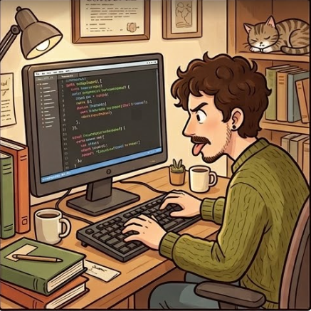
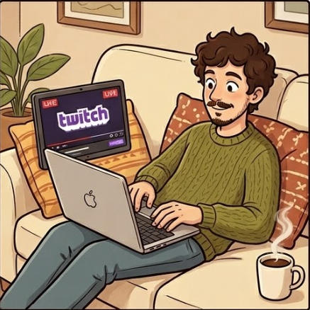
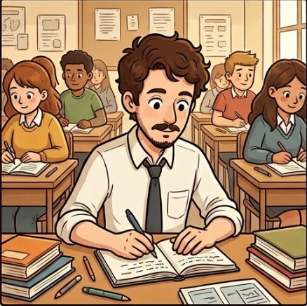
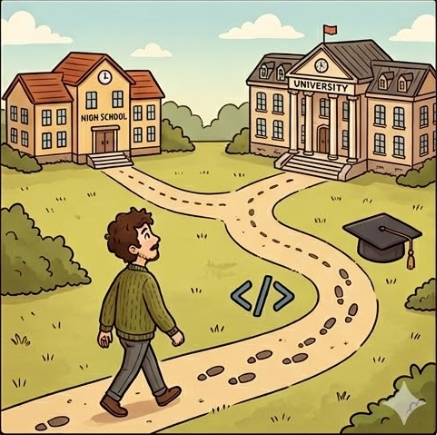

Nombre y apellidos
Mauricio Rodríguez López

Lugar de nacimiento y nacionalidad
Lugar de nacimiento: España
Nacionalidad: Español
Pasatiempos/Hobbies
Suelo pasar tiempo con el PC (oh, sorpresa), ya sea viendo Twitch, o haciendo o consumiendo cualquier contenido por el que me haya dado en ese momento. (Bueno, empatado con el overthinking quizá 🤔💭 🤯)

Mis estudios 👨🏻🎓
Certificado Prof. Desarrollo de Aplicaciones Web (Hermanos Naranjo)
Ed. Primaria (UGR)
FP Desarrollo de Aplicaciones Multiplataforma (MEDAC)

Recorrido 😵
Hice un certificado de Desarrollo de Aplicaciones Web, (hace ya un poco 👴🏻) y como fue entretenido, interesante, el siguiente paso lógico parecía la carrera, (que no pude terminar), en la UGR, donde posteriormente hice la de Educación Primaria (esta vez sí). Y tras esto, volví porque tenía la espinita clavada, e hice la FP de DAM en MEDAC.
